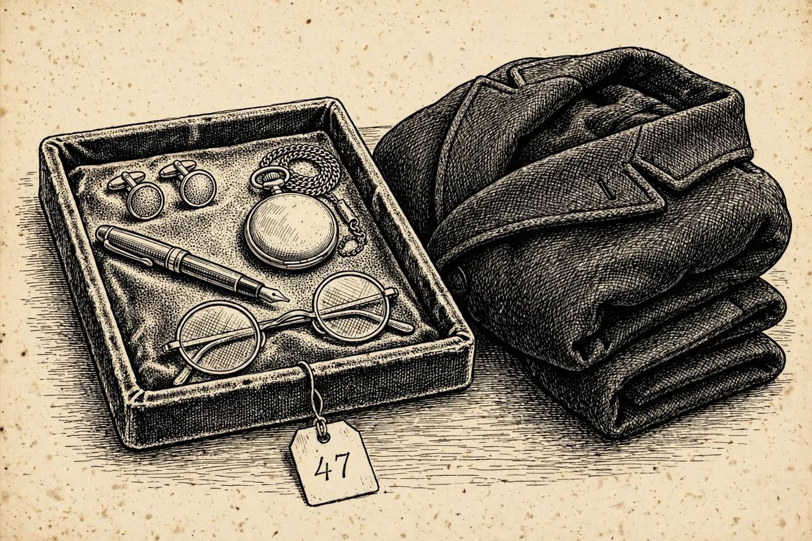

3 de diciembre
Las primeras declaraciones
Libro · págs. 14-17
Audio del día
Transcripción
«El salón de la chimenea está caliente, pero el ambiente congela la sangre. Cinco rostros nos observan. Todos tienen una coartada impecable... y todos mienten en algo. Pero el verdadero hallazgo no está en sus palabras, sino en el abrigo de la víctima. Un sobre sin remitente con letras mayúsculas e inclinadas. Un mensaje antiguo que huele a chantaje. Quien escribió esta nota usó el cifrado de los viejos emperadores. Haz retroceder las letras... antes de que la nieve lo borre todo.»

Intenta resolverlo primero. Abre solo lo que necesites, en este orden.
1Pista sutil
Es un cifrado César tradicional de desplazamiento +3. Para descifrarlo, debes retroceder 3 posiciones en el alfabeto (A B C D E...). Por ejemplo, la D pasa a ser A, y la H pasa a ser E.
2Comprobación parcial
Las dos primeras palabras del mensaje descifrado son EL PASADO.
3Pista fuerte
H retrocede a E y O retrocede a L: la primera palabra es EL. El mensaje tiene siete palabras y la última empieza por S.
4Solución oficialSpoiler si no lo has intentado
Mensaje descifrado: EL PASADO NO PRESCRIBE. VESPER LO SABE
Para el desenlace de la historia, vuelve al libro: la sección de soluciones está al final.